Learning Objectives
After completing this lesson, you’ll be able to:
- Turn a JSON response into features using the JSONFragmenter transformer.

Learning content in the FME Academy presents a user story that addresses their data integration challenges with FME. You should follow along with their actions using your FME installation (2026.1 or later) or request an on-demand virtual machine. Some lessons will require you to follow their steps or take additional steps to answer a quiz question.
The Resources section will provide links to interactive tutorials and starting workspaces when necessary.
Instructions
In this lesson, you will:
- Scroll down to read the text below.
- Complete the exercise by following the steps.
- Complete the Quiz toward the bottom of the page.
- Optional: Let us know if you found this lesson relevant to your role by filling out the survey at the bottom of the page.
- Click 'Next' to mark the lesson complete.
Resources
Scenario

Jennifer has successfully retreived JSON from an API. However, it's currently stored as a JSON document in an attribute on a feature. She needs to turn the JSON text into FME features with attributes. She'll use a JSON transformer for this task.
1) Open Starting Workspace
- Start FME Workbench (2026.1 or later).
- Open the starting workspace (C:\FMEData\Workspaces\IntegrateDataWithTheFMEPlatform\work-with-json.fmw).
2) Add a JSONFragmenter
- Select the HTTPCaller and then use Quick Add to add a JSONFragmenter transformer.
- Transformers are aware of the data you connect them to, so it is vital that you connect them before configuring.
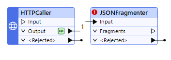
- Double-click the JSONFragmenter to open its parameters. Makes the following changes:
| Source > JSON Attribute |
_response_body |
| Flattening > Flatten Query Result into Attributes |
Yes |
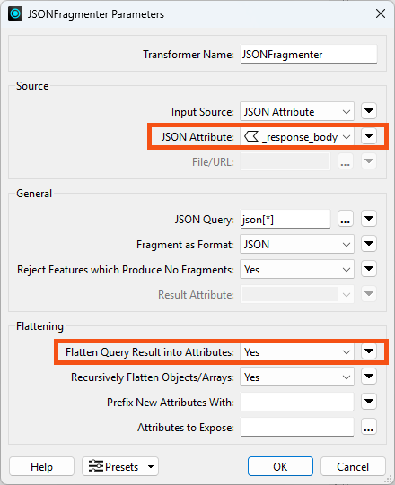
With these settings, the JSONFragmenter will split each JSON array entry into an FME feature. Then it will "flatten" the JSON's nested structure into the columnar structure of FME attributes.
However, if we use only these settings, the resulting attributes will be unexposed; they will not appear in the Table view or be accessible in the workspace. This is because FME is designed to work with a fixed schema. It is not known in advance what names these attributes will have, because the JSON could contain anything. So we have to expose the attributes we expect.
Exposing attributes can be done with the Attributes to Expose parameter in the JSONFragmenter, but we can use the attributes stored in the data cache if we uses an AttributeExposer transformer instead.
3) Add an AttributeExposer
- Click OK to close the JSONFragmenter parameters.
- Run the workspace to create the cache on the JSONFragmenter.
- Add an AttributeExposer transformer connected to the JSONFragmenter:
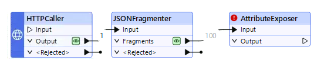
- Double-click the AttributeExposer to open its parameters.
- Click on Import->From Data Cache...
- Note: the Import button might not be visible at first. Resize the AttributeExposer Parameters dialog to make it bigger if you don't see it.
- The Import button appears in many FME dialogs. It lets you import values from a dataset and can be helpful when you need to supply a list of
- attribute names from an existing dataset
- feature type names from an existing dataset
- coordinate systems
- formats
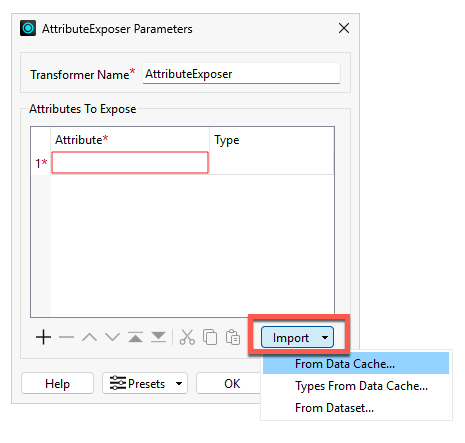
An Import from Data Cache dialog appears. By default, all the attributes found in the cache are selected for exposing.
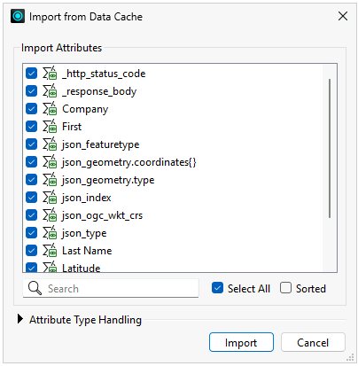
- Click Import and then OK to expose all of the added attributes.
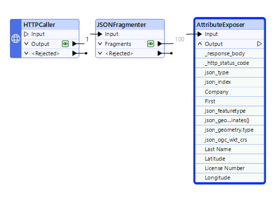
4) Test the JSONFragmenter
Let's test if we configured the transformer correctly.
- Click the Run button.
- Notice how only the AttributeExposer is highlighted in green when you mouse over the Run button. This highlighting indicates which parts of the workspace will run. When FME has data caches, it will only run sections of the workspace that don't yet have caches.
- The workspace runs.
- Observe that the Data Preview's Table view shows the results of the AttributeExposer cache. It now has the attributes we want.
- You might have to scroll the Table view to the right to see all the new attributes.
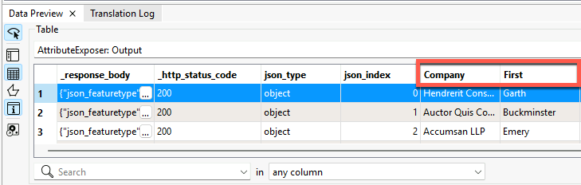
We successfully read the web data and extracted the attributes.
In the next lesson, we'll generate geometry from coordinates and write the data to a geodatabase.
Optional Challenge: Integrate with Generative AI
This is an optional section. The changes Jennifer makes to the workspace won't carry over to the next lesson.
To learn more about AI features in FME, check out this blog post. You can also download our AI security whitepaper.
Jennifer would like to generate a short text summary of each business for use in the city's annual business license renewal emails. She doesn't want to write one for every feature, so this is a good use case for generative AI using a large language model.
1) Add a Sampler
- To test this workflow, add a Sampler using a new connection to the AttributeExposer.
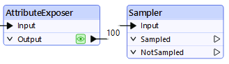
- Set the Sampler to a Sampling Rate of 1 and a Sampling Type of First N Features.
- With this configuration, the Sampler will take just the first feature, which she can use to test her workflow. Once she's happy with the test, she can disable or remove the Sampler.
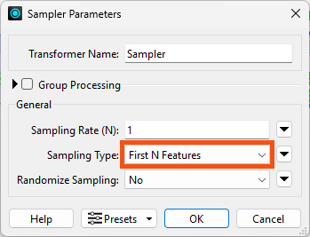
2) Add an OpenAIConnector
At this point, we could use another HTTPCaller to call the OpenAI API, but someone has already created an FME custom transformer that makes this process even easier. We can quickly download it from the FME Hub and use it in our workspace. Because FME is the all-data, any-AI platform, we could connect to any AI provider she wished via API. We chose OpenAI because we are familiar with their platform.
- Use Quick Add to add the OpenAIConnector after the Sampler.
- You are prompted to choose if you'd like to Install this custom transformer from the FME Hub.
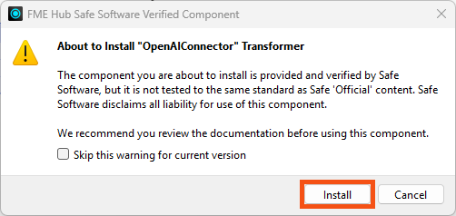
- Click Install and the transformer appears on the canvas.
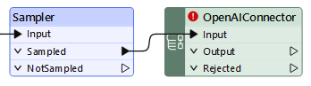
- Double-click the OpenAIConnector open its parameters.
- Provide her own API Key.
- If you would like to test this workflow, please create an OpenAI Account and retrieve an API key to use.
- Choose Text Generation as the Action and gpt-4o as the Model.
- For Instructions, which will instruct the AI assistant what persona to use in its answers, enter:
You are an employee working for a city's Business License department. Your tone should be professional, friendly, and to the point.
- For User Prompt, which provides the assistant's instructions, enter:
Please generate a 2-sentence summary of the following business.
Here are the details:
Company Name: @Value(Company)
Business License Number: @Value(License Number)
Business Owner Name: @Value(First) @Value(Last Name)
Business Location: @Value(Latitude), @Value(Longitude)
Please only return the summary address in your response; provide no extra text or formatting.
3) Test AI Integration
- Run the workspace and inspect the single result.
- The Response attribute contains the assistant's summary.
Hendrerit Consectetuer Cursus Industries, owned by Garth Garrett, operates under business license number 8BCB7F. The business is located at coordinates 49.24906160267, -123.1006079306.
It's pretty basic, but it will save her time from having to write it herself. If she adds more business information in the future, she could ask the assistant to add more detail or conduct other tasks like classifying business into NAICS codes or flagging business with potentially incorrect attribute values.
Learn More